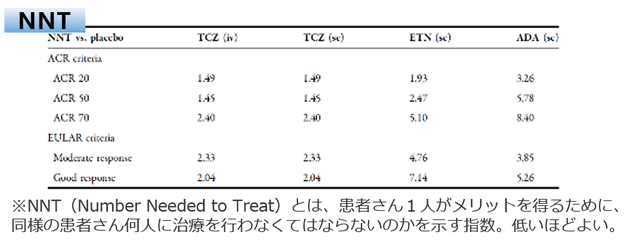
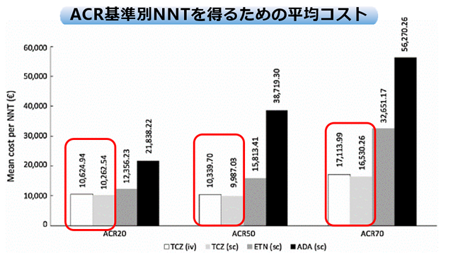
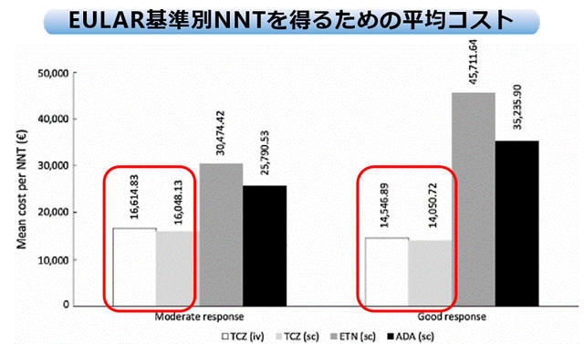

Monotherapyで、アクテムラはTNF阻害薬[ADA・ETA]に比べ費用対効果に優れている（イタリアからの報告）
- ●２つのMTX不応例に対するメタアナリシスより、Monotherapyの生物学的製剤（ADA・ETN・TCZ）の費用対効果を検討
- ●有効性は投与6ヵ月後のACR基準とEULAR基準で検討。コストには薬剤費に加え管理料等も考慮した。費用対効果はプラセボに対する、NNT※を得るためのコストで評価した。
- ●6ヶ月間の薬剤費はTCZi-iv €6791,TCZ-sc €6787,ETN €6302 ,ADA€6598,CTZ€5984とTCZが最も高い（1€は約112円 ）



アクテムラはイタリアのBioの中で一番薬剤費が高いものの、有効性の高さから最も費用対効果に優れるBioであるとされた
Batticciotto A .et,al:Adv Ther. 2016 Jul 4. [Epub ahead of print]